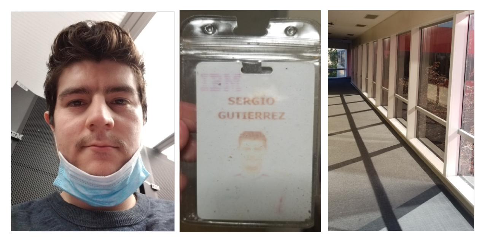
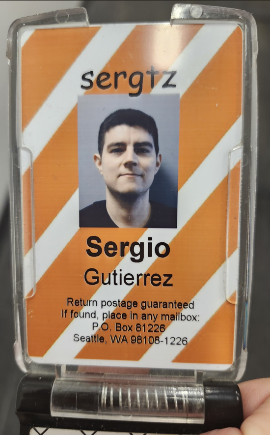

Background and Formation
In 2014, I enrolled at De Anza College, located in Cupertino, California. This is where I began my career in Computer Science. From 2014 to 2019, I took nearly all the programming classes offered by the school. This included 3 courses in C++, 2 courses in Java, 1 in javascript, 1 in HTML/CSS, 1 in Assembly, and 2 in Linux/Unix. At De Anza, I obtained a liberal Arts-Science, Math and Engineering Associate's degree. I wasn't actually pursuing this, I simply obtained it by completing the courses I needed to transfer to San Jose State University.
In 2019, I transferred to San Jose State University to finish my Computer Science degree. The Upper division courses gave me experience working in Agile environments developing software. At SJSU, I took 1 course in PHP, 1 in javascript, 5 in Java (including android development), 2 in C++, 1 in C, 1 in C# (which included a project in Unity), and one course that included Haskell, Prolog and Scheme. I also took courses in relational databases, where I learned MySQL and SQLite. I graduated in August 2021.
On September of 2017, I joined IBM taking the role of Data Center Specialist.
 At IBM, these were some of the tasks I performed on a regular basis:
- Deploying and installing switches, storage servers, and other data center machines.
- Cabling switches and servers, including: power, ethernet cables, network fiber cables, and much more. High standards were always used to keep cabling very presentable.
- Troubleshoot network related tickets. This includes but is not limited to:
•Testing fiber cables to see how much light comes out of them.
•Tracing network fiber from spines, bricks, etc.
•Replacing optics. Replacing and running network cables from one switch to another.
•Running loopback tests to test network connectivity on switches and fiber.
•Run backend diagnostics test with various tools to test network connectivity issues.
•Collaboration with backend software networking teams to either deploy/install, or bring back a failed switch.
- Building servers from scratch based on needs. Work with storage systems.
- Managed and configured VMware virtualization technologies within the Data Center.
- Extensive knowledge in troubleshooting defective servers by resolving trouble tickets:
•Swapping defective parts (FRUs), such as memory sticks, CPUs, risers, interposers, front and back planes, network cards, SSDs, HDDs, fans, motherboards, internal cables, etc.
•ISO testing.
•Running linux commands to update firmware, OS, or backend software in the backend.
•Using multiple software tools to run diagnostics on the servers, switches, and data center environment.
- Linux/Unix Administration (Red Hat, CentOS, Ubuntu). Some Windows administration. Extensive usage of linux command line.
- Extensive scripting in bash.
- Installing O.S. on servers, run firmware updates, and configure their BIOS.
- Write up and follow SOPs.
- Resolve tickets from ticketing systems. Triage tickets, providing instructions.
- Occasional maintenance of AHU and CRAHU cooling systems in the data center.
- Occasional handling of rPDUs, electrical whips, and electrical panels.

At the end of August of 2021 (slightly before leaving IBM), I obtained the role of Web Software Application Developer at the Maine Long Term Care Ombusman Program. They are based in Augusta, Maine, U.S., but I work remotely for them. I still hold this position, and it is a part time job. I perform the duties of this job mostly on evenings of weekdays and Saturdays. I love working for this company. Some of the tasks include:
- Maintain and support an existing web application, both the frontend and the backend.
- Frontend tasks with HTML, CSS and Javascript. Key tool: Visual studio code.
- Backend tasks with Java and MySQL. Key tools: Netbeans, Eclipse, phpMyAdmin.
- Debugging tasks, mainly in Javascript and Java.
- Periodically, create SQL queries that export MS excel spreadsheets based on specific data found in the database.
- Linux/Unix shell skills to administer the web application that runs on a Tomcat server.
- Technologies used: Visual Studio Code, Netbeans, WinSCP, etc.
In 2022, I worked for CDK Global as a Software Developer intern. Here's some of the tasks I had:
- API testing using “Rest-Assured” with other CDK Global automation tools. Used Typescript.
- Used TestNG framework for end-to-end tests.
- Web UI Automation using Cypress (javascript end to end testing framework) and Cucumber, in a Behavior Driven Development environment.
- Creation of React Native Mobile App with a team of 6 developers.
- Also worked in a separate team of 5 Software Test Engineers.
- Tools used: Cypress, Cucumber, TestNG framework, Rest-Assured, Visual Studio Code. React.js framework, Typescript. Git, Jira.
I worked with Samarth Goudar, Abhitej Arora, Sameer Joshi, Sathwik Nadella, and Saurabh Vijaywargia. Here's 5 pictures a few pictures I took at CDK Global:


Since the React Native app my team and I developed at CDK, is not an internal application to CDK's operations, I can show my work. Here is the github where a portion of the work was done: https://github.com/10samarth/STEMApp
In 2022, I became a Software Engineer Intern for Automation Anywhere:
Some of the tasks I had were:
- Java development with a team of developers in the creation of newer enterprise versions of Automation Anywhere 360 software.
- Debugging tasks using VMs, Java, and Linux.
- Testing InstallShield software
- Making use of VMs for testing purposes.
- Creation of an Android SDK App (side project).
- Tools used: Eclipse, IntelliJ, Spring, Springboot, Jira, git, Automation Anywhere 360 control room software.
My managers were Joe Antonelli and Krishna Kanth.
On May 1st, 2023, I was hired as a Data Center Tech Engineer III for Amazon Data Services, Inc. My managers were Chris Williams and Ivan Chow. Among other things, here's the main tasks I have completed in this role:

- Maintaining and supporting data center hardware, including servers of various types / sizes.
- Troubleshooting defective servers. Swapping defective parts, such as memory sticks, CPUs, K2 cards, motherboards, fans, etc.
- Problem solving with and without workflows. Maintain SLAs through the implementation of proactive issue detection and immediate response. Support procedures, system documentation, and issue tracking entries into a trouble ticket system.
- Run diagnostics tests on hosts.
- Handle rackdowns.
- Linux/Unix Administration (Red Hat, Ubuntu, Amazon Linux). Some Windows administration.
- Usage of the Linux command line.
- Network troubleshooting tasks, such as handling fiber, optics, running loop tests, etc. Cabling and running fiber.
- Configure and provision servers
- Build switches.
- ISO Testing.
- Shell scripting
- Run firmware / OS updates
- Flash Motherboards
On May 13th, 2024, I was hired as a Data Center Engineer For SmartBear Software Inc. My manager was Kesrick Grey. Here's some of the tasks I performed:
- Rack and Install storage servers, network switches, and iOS / Android devices in clusters.
- Cable racks.
- Configure and Provision iOS and Android devices on clusters that are connected to hubs, and to servers (ipads, tablets, smartphones)
- Maintain and support infrastructure, bare metal, server and storage platforms. Maintain and troubleshoot iOS and Android devices if they go offline or are stuck in a cleaning process on jenkins.
- SSH / VNC into clusters, and individual VMs to troubleshoot / debug cleaning errors through the usage of Linux commands.
- Replace defective hardware parts on Linux / iOS servers, iOS and Android devices, and other hardware.
- Update / Install OS, or OS patches on iOS clusters.
- Create documentation of anything new I learned and share with co-workers through Jira.

On November 18th, 2024, I was hired as a System Engineer Super Micro Computer Inc. My managers were Carlo Vergara and Tashbeeb Shadid. Here's some of the tasks I performed:
• Travel to customer data centers, both local and remote, to perform hardware installations.
• Rack and stack server hardware following established guidelines, ensuring proper alignment and organization within server racks.
• Install and configure network equipment, including switches, routers, and firewalls, adhering to manufacturer specifications.
• Run, terminate, and test fiber optic and copper network cables to interconnect server clusters, following best practices for cable management.
• Ensure cable pathways are tidy and properly labeled for ease of maintenance and troubleshooting.
• Demonstrate a strong understanding of server and network hardware components, configurations, and installation procedures.
• Troubleshoot hardware and cabling issues, diagnosing, and resolving problems that may arise during installations.
• Maintain accurate and up-to-date records of hardware installations, cable layouts, and network configurations.
• Communicate effectively with customers, understanding their technical requirements and ensuring their satisfaction with the installation process.
• Collaborate with customer teams to coordinate installation schedules, downtime, and other logistical considerations.
• Adhere to industry best practices and data center standards for hardware installation, cable management, and network connectivity.
• Ensure compliance with safety guidelines and protocols during installations.
• Perform quality checks on installed hardware and cables to ensure optimal performance, integrity, and longevity.
• Address any deficiencies or issues promptly, taking corrective actions as necessary.
• Plan travel itineraries, accommodations, and logistics for frequent trips to customer sites, such as Intel and USI.
• Manage travel expenses and documentation, maintaining accurate records for reimbursement.
• Diagnose the root cause of system failures and isolate the components/failure nodes.
• Respond on an as-needed basis to emergencies and provide remedy for catastrophic failure events.
• Develop and publish test reports and communicate findings to team members.
• Basic scripting skills for automating validation tests.
• Work together with Supermicro Sales teams, Field Engineers, Product Managers to understand /formulate product requirements.
• Work with cross-functional teams, including, Engineering, Component Managers, Sales and IT team on assigned projects.
To end my background, the following slideshow features certificates of courses I completed in fall of 2021, from Udemy, sponsored by IBM (they encouraged me to get those certifications). Here they are:

Thank you for spending time reading my background info!! If you are a recruiter or manager, and I applied to your company, I hope my background comes close to what you are looking for!